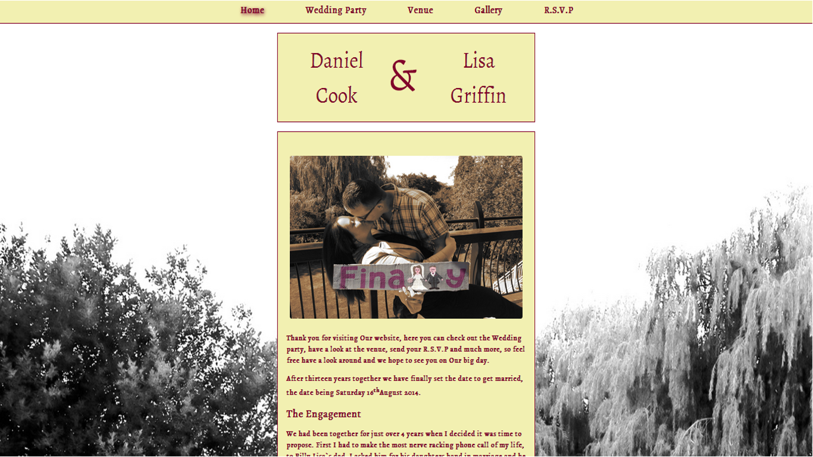
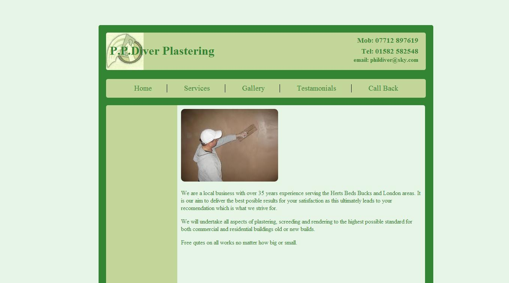
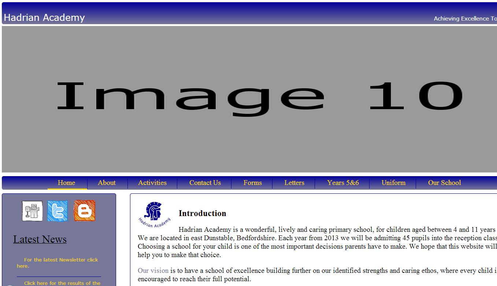

Some of my work
Dan and Lisa`s Wedding Website
This was my very first attempt at designing and building a website and I must say that im quite proud of it.
P.P.Diver Plastering (no longer active)
My second attempt at creating a website. This was for a close friend of mine. The colours were chosen because they were the colour of his buisness card.
Hadrian Academy(Not Active)
This site was for a school where a friend of mine works. They were looking for ways to improve the current site that is built in wordpress, so I decided that I would take on this project as practice. In reality a site built from scratch that needs constant updating would be unrealistic and as I was unfamiliar with wordpress it was never going to get beyond my computer but was a valuable learning experience.
Your site could be here
for your chance to have your site shown here contact me and I could build you a fresh new site from scratch that is 100% original and built to your specifications.